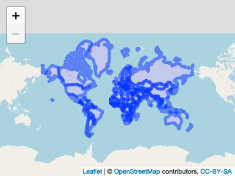

Map Development
This document contains the code used to work through creating maps of the data.
library(tidyverse)
library(dplyr)
library(patchwork)
library(leaflet)
library(lubridate)
library(rvest)
library(httr)
library(flexdashboard)
library(plotly)
library(viridis)
library(stringr)
library(maps)
library(corrplot)
library(rworldmap)
knitr::opts_chunk$set(
fig.width = 6,
fig.asp = .6,
out.width = "90%"
)
theme_set(theme_minimal() + theme(legend.position = "bottom"))
options(
ggplot2.continuous.colour = "viridis",
ggplot2.continuous.fill = "viridis"
)
scale_colour_discrete = scale_colour_viridis_d
scale_fill_discrete = scale_fill_viridis_dData import and tidying
url = "https://aidworkersecurity.org/incidents/search"
aidworker_html = read_html(url)
aidworker_df =
aidworker_html %>%
html_nodes(css = "table") %>%
first() %>%
html_table() %>%
as_tibble()
aidworker_df =
aidworker_df %>%
janitor::clean_names() %>%
select(-source, -verified) %>%
rename(year = year_sort_descending) %>%
mutate(intl_org_affected =
case_when(
un != 0 ~ "yes",
ingo != 0 ~ "yes",
icrc != 0 ~ "yes",
ifrc != 0 ~ "yes",
other != 0 ~ "yes",
lngo_and_nrcs != 0 ~ "no"),
intl_org_affected = as.factor(intl_org_affected)) %>%
mutate(
latitude = as.numeric(latitude),
longitude = as.numeric(longitude)
) %>%
relocate(id, month, day, year, country, intl_org_affected)## Warning: Problem with `mutate()` input `latitude`.
## ℹ NAs introduced by coercion
## ℹ Input `latitude` is `as.numeric(latitude)`.
## Warning in mask$eval_all_mutate(dots[[i]]): NAs introduced by coercion
## Warning: Problem with `mutate()` input `longitude`.
## ℹ NAs introduced by coercion
## ℹ Input `longitude` is `as.numeric(longitude)`.
## Warning in mask$eval_all_mutate(dots[[i]]): NAs introduced by coercionempty_as_na <- function(x){
if("factor" %in% class(x)) x <- as.character(x)
ifelse(as.character(x) != "", x, NA)
}
aidworker_df =
aidworker_df %>% mutate_each(funs(empty_as_na)) global_map_df =
aidworker_df %>%
mutate(
kidnapping = case_when(means_of_attack %in% c("Kidnapping", "Kidnap-killing") ~ 1),
shooting = case_when(means_of_attack %in% c("Shooting") ~ 1),
assault = case_when(means_of_attack %in% c("Bodily assault", "Rape/sexual assault") ~ 1),
explosive = case_when(means_of_attack %in% c("Aerial bombardment", "Landmine", "Other Explosives", "Roadside IED",
"Shelling", "Vehicle-born IED") ~ 1)) %>%
drop_na(year) %>%
group_by(country, year) %>%
summarize(
number_incidents = n(),
tot_national = sum(total_national_staff),
tot_intl = sum(total_international_staff),
tot_victims = sum(total_victims),
tot_kidnappings = sum(kidnapping, na.rm = TRUE),
tot_shootings = sum(shooting, na.rm = TRUE),
tot_assault = sum(assault, na.rm = TRUE),
tot_explosive = sum(explosive, na.rm = TRUE)) %>%
drop_na(country)## `summarise()` regrouping output by 'country' (override with `.groups` argument)Hey team - so I found a pacakge called rworldmap. You can access useful information about how to use the package by calling vignette("rworldmap").
global_map_df %>%
joinCountryData2Map(
joinCode = "NAME",
nameJoinColumn = "country",
verbose = TRUE
)## 472 codes from your data successfully matched countries in the map
## 53 codes from your data failed to match with a country code in the map
## failedCodes failedCountries
## [1,] NA "Chechnya"
## [2,] NA "Chechnya"
## [3,] NA "Chechnya"
## [4,] NA "Chechnya"
## [5,] NA "Chechnya"
## [6,] NA "Chechnya"
## [7,] NA "Chechnya"
## [8,] NA "Chechnya"
## [9,] NA "Chechnya"
## [10,] NA "DR Congo"
## [11,] NA "DR Congo"
## [12,] NA "DR Congo"
## [13,] NA "DR Congo"
## [14,] NA "DR Congo"
## [15,] NA "DR Congo"
## [16,] NA "DR Congo"
## [17,] NA "DR Congo"
## [18,] NA "DR Congo"
## [19,] NA "DR Congo"
## [20,] NA "DR Congo"
## [21,] NA "DR Congo"
## [22,] NA "DR Congo"
## [23,] NA "DR Congo"
## [24,] NA "DR Congo"
## [25,] NA "DR Congo"
## [26,] NA "DR Congo"
## [27,] NA "DR Congo"
## [28,] NA "DR Congo"
## [29,] NA "DR Congo"
## [30,] NA "DR Congo"
## [31,] NA "DR Congo"
## [32,] NA "Kashmir"
## [33,] NA "Libyan Arab Jamahiriya"
## [34,] NA "Libyan Arab Jamahiriya"
## [35,] NA "Libyan Arab Jamahiriya"
## [36,] NA "Libyan Arab Jamahiriya"
## [37,] NA "Libyan Arab Jamahiriya"
## [38,] NA "Libyan Arab Jamahiriya"
## [39,] NA "Libyan Arab Jamahiriya"
## [40,] NA "Libyan Arab Jamahiriya"
## [41,] NA "Libyan Arab Jamahiriya"
## [42,] NA "Occupied Palestinian Territories"
## [43,] NA "Occupied Palestinian Territories"
## [44,] NA "Occupied Palestinian Territories"
## [45,] NA "Occupied Palestinian Territories"
## [46,] NA "Occupied Palestinian Territories"
## [47,] NA "Occupied Palestinian Territories"
## [48,] NA "Occupied Palestinian Territories"
## [49,] NA "Occupied Palestinian Territories"
## [50,] NA "Occupied Palestinian Territories"
## [51,] NA "Occupied Palestinian Territories"
## [52,] NA "Occupied Palestinian Territories"
## [53,] NA "Occupied Palestinian Territories"
## 167 codes from the map weren't represented in your dataSo, Chechnya, DR Congo, Kashmir, Libyan Arab Jamahiriya, Occupied Palestinian Territories are in our df, but not in the map. As per the reasons outlined in part_1.RMD, I think we should drop Kashmir (only 1 incident) and recode Chechnya as Russia (we have no other data in Russia), and make a note. We could try recoding the other countries with other names for them and see if they end up matching up.
joined_map =
global_map_df %>%
filter(year == "2019") %>%
joinCountryData2Map(
joinCode = "NAME",
nameJoinColumn = "country",
verbose = TRUE
)## 38 codes from your data successfully matched countries in the map
## 3 codes from your data failed to match with a country code in the map
## failedCodes failedCountries
## [1,] NA "DR Congo"
## [2,] NA "Libyan Arab Jamahiriya"
## [3,] NA "Occupied Palestinian Territories"
## 205 codes from the map weren't represented in your datapar(mai =c (0,0,0.2,0), xaxs = "i", yaxs = "i")
glob_map = mapCountryData(joined_map, nameColumnToPlot = "tot_victims", addLegend = FALSE)## You asked for 7 quantiles, only 3 could be created in quantiles classification
It worked!!!! I think? Can filter by year (manually in the code). Concerned that the documentation specifies that the df that should be merged to the map should only have one country per line. Also, we’re missing important countries that didn’t exist on the underlying map (Palestine, Libya, DR Congo). I think we need to find out how they’re stored in the underlying map so that we can recode the country names in our df before merging.
joined_map$country %>%
view()
view(countrySynonyms)
global_map_df$country =
recode(global_map_df$country,
'Chechnya' = 'Russia',
'DR Congo' = 'Democratic Republic of the Congo',
'Syria' = 'Syrian Arab Republic',
'Libyan Arab Jamahiriya' = 'Libya',
'Occupied Palestinian Territories' = 'Occupied Palestinian Territory')
global_map_df =
global_map_df %>%
filter(country != "Kashmir")First I tried to view the list of countries once merged. It appears to only show the countries from our DF.
Then I found that the rworldmap package has a df with a list of synonyms for the countries it includes. I pulled up the df and searched for the five countries that did not match, to see how they are referred to by the rworldmap package.
Now I’m going to go back and try merging with the new df with tidied / matched names. I ran the code and found 0 failed codes. Yay! We’ve matched. Next steps involve confirming that we can match multiple rows of data with the same country.
map_world = map_data("world")
map_world$region =
recode(map_world$region,
'Ivory Coast' = 'Cote D\'Ivoire',
'Syria' = 'Syrian Arab Republic'
)
global_map_df$country =
recode(global_map_df$country,
'Occupied Palestinian Territories' = 'Palestine',
'DR Congo' = 'Democratic Republic of the Congo',
'Congo' = 'Republic of Congo',
'Libyan Arab Jamahiriya' = 'Libya',
'Chechnya' = 'Russia'
)
global_map_df =
global_map_df %>%
filter(country != "Kashmir")
map_world =
map_world %>%
rename(country = region)
global_map_df_2019 =
global_map_df %>%
filter(year == "2019")
joined_map_2019 =
left_join(map_world, global_map_df_2019) %>%
mutate(polygon_fill = ifelse(is.na(tot_victims), F, T))## Joining, by = "country"ggplot() +
geom_polygon(data = joined_map_2019, aes(x = long, y = lat, group = group, fill = polygon_fill))
After working through all this…if we want the map to be interactive (labels showing our data, etc.) I think we need to stick with leaflet. We can utilize a polygon layer in leaflet…I downloaded a geojson file, map of the world, from https://geojson-maps.ash.ms/
countries = geojsonio::geojson_read("./data/custom.geo.json", what = "sp")
main_map = leaflet(countries) %>%
addTiles() %>%
addPolygons()
main_map
The above imposes polygons on the map. This is good. I think we can play around with the size of the outlines, as well as the fill.
What will take a decent amount of work is mapping our data onto this map. (1) Need to compare names again to figure out how to merge? What names to update so we have a common variable to join on. (2) Think we may also have a problem with having countries being listed multiple times in our df (our observations are aggregated attacks within a country per year, not only per country). Make a function that plots individual data frames per year?
names(countries)## [1] "scalerank" "featurecla" "labelrank" "sovereignt" "sov_a3"
## [6] "adm0_dif" "level" "type" "admin" "adm0_a3"
## [11] "geou_dif" "geounit" "gu_a3" "su_dif" "subunit"
## [16] "su_a3" "brk_diff" "name" "name_long" "brk_a3"
## [21] "brk_name" "brk_group" "abbrev" "postal" "formal_en"
## [26] "formal_fr" "note_adm0" "note_brk" "name_sort" "name_alt"
## [31] "mapcolor7" "mapcolor8" "mapcolor9" "mapcolor13" "pop_est"
## [36] "gdp_md_est" "pop_year" "lastcensus" "gdp_year" "economy"
## [41] "income_grp" "wikipedia" "fips_10" "iso_a2" "iso_a3"
## [46] "iso_n3" "un_a3" "wb_a2" "wb_a3" "woe_id"
## [51] "adm0_a3_is" "adm0_a3_us" "adm0_a3_un" "adm0_a3_wb" "continent"
## [56] "region_un" "subregion" "region_wb" "name_len" "long_len"
## [61] "abbrev_len" "tiny" "homepart" "filename"view(countries$name)
x =
global_map_df$country %>%
unique()
y =
countries$name %>%
unique()
x %in% y## [1] TRUE TRUE TRUE TRUE TRUE TRUE TRUE TRUE TRUE TRUE TRUE TRUE
## [13] TRUE FALSE TRUE TRUE TRUE FALSE FALSE FALSE TRUE TRUE TRUE TRUE
## [25] TRUE TRUE TRUE TRUE TRUE TRUE TRUE TRUE TRUE TRUE TRUE TRUE
## [37] TRUE TRUE TRUE TRUE TRUE TRUE TRUE TRUE TRUE TRUE TRUE FALSE
## [49] TRUE TRUE TRUE TRUE TRUE TRUE TRUE FALSE TRUE TRUE TRUE TRUE
## [61] TRUE TRUE TRUE TRUE FALSE TRUE TRUE FALSE TRUE TRUE TRUE TRUE
## [73] TRUE TRUE TRUE TRUE FALSE TRUE TRUE TRUEdiscrepancy = x[which(!(x %in% y))]
discrepancy## [1] "Central African Republic" "Republic of Congo"
## [3] "Cote D'Ivoire" "Democratic Republic of the Congo"
## [5] "Mauritius" "Occupied Palestinian Territory"
## [7] "South Sudan" "Syrian Arab Republic"
## [9] "Western Sahara"global_map_df$country =
recode(global_map_df$country,
'Central African Republic' = 'Central African Rep.',
'Republic of Congo' = 'Congo',
'Cote D\'Ivoire' = 'Côte d\'Ivoire',
'Democratic Republic of the Congo' = 'Dem. Rep. Congo',
'Occupied Palestinian Territory' = 'Palestine',
'South Sudan' = 'S. Sudan',
'Syrian Arab Republic' = 'Syria',
'Western Sahara' = 'W. Sahara'
)
global_map_df =
global_map_df %>%
filter(country != "Mauritius")
global_map_df =
global_map_df %>%
rename(name = country)Mauritius was dropped. Only 1 attack. Will need to make note of in our final dashboard.
Next steps: * figure out how to match our df with polygons * aesthetics of polygons - fix (lines too wide) * write function to match df (for each YEAR) with polygons - this is what will be called in the shiny app * popups for hovering over each country * move back to the map dashboard document to work in shiny!